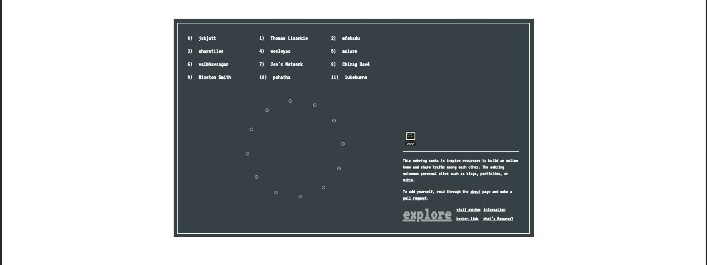

screenshot of the webring member directory

A Webring for the Recurse Center
While at Recurse Center I noticed that many of us value presenting ourselves online in a way which feels authentic and that we like sharing and connecting with others through shared interests.
As a response to this realization I made a webring to encourage recursers to create an online home and to share traffic amongst each other.
A webring is a collection of websites traditionally linked together by a circular structure. I thought that perhaps this structure would offer a fine way for us to link our online homes together.
added: 20-08-2019